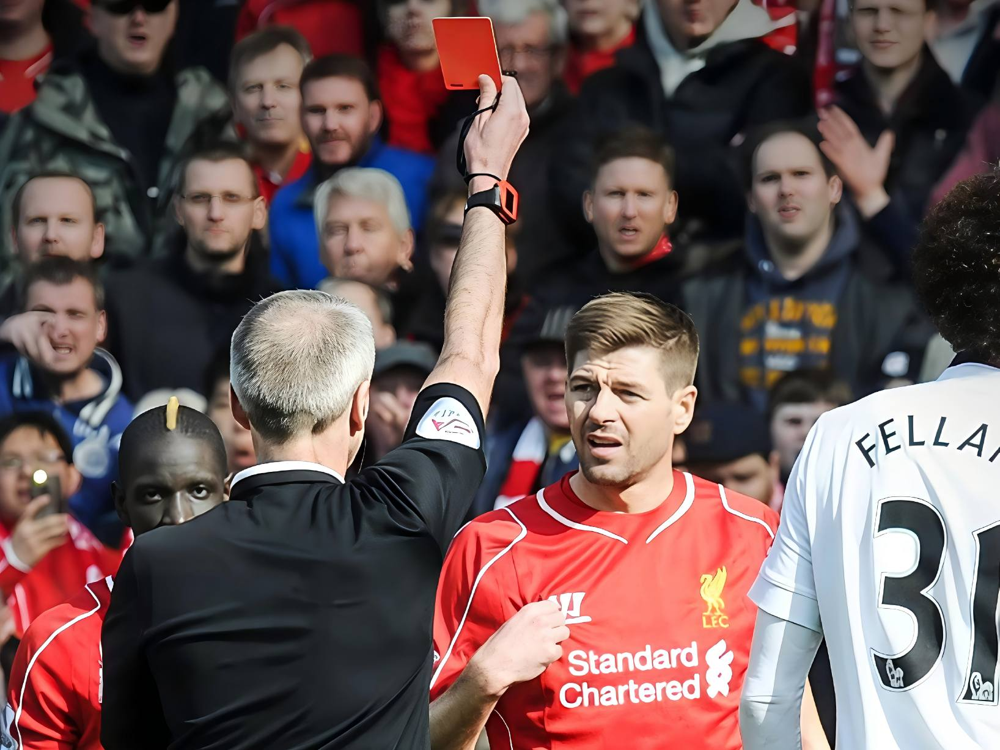
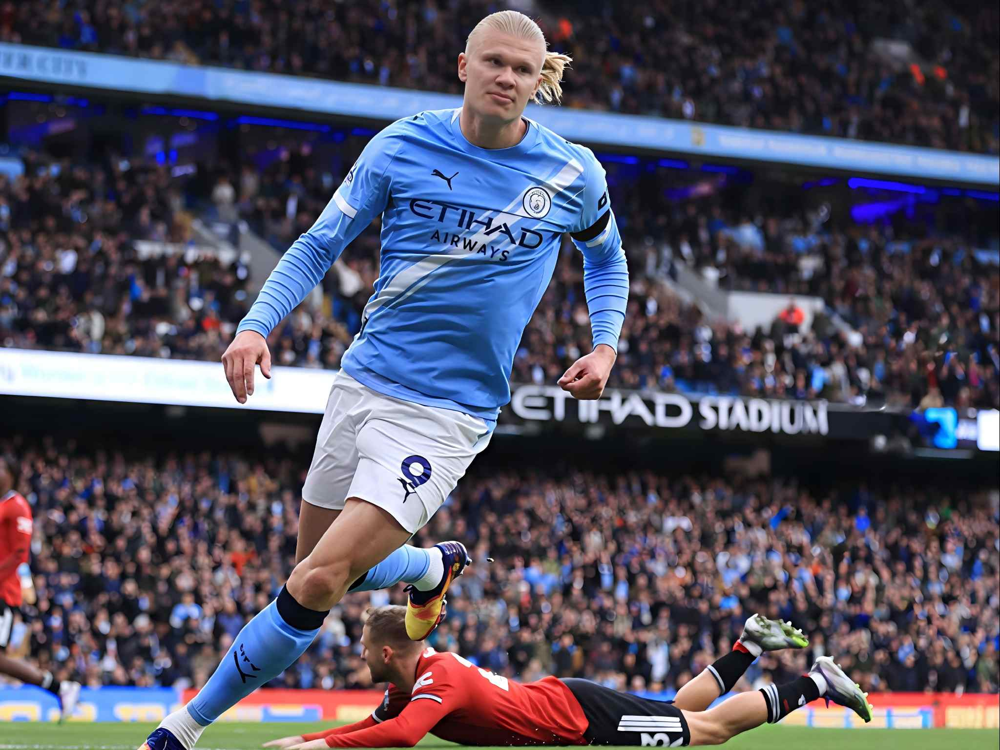
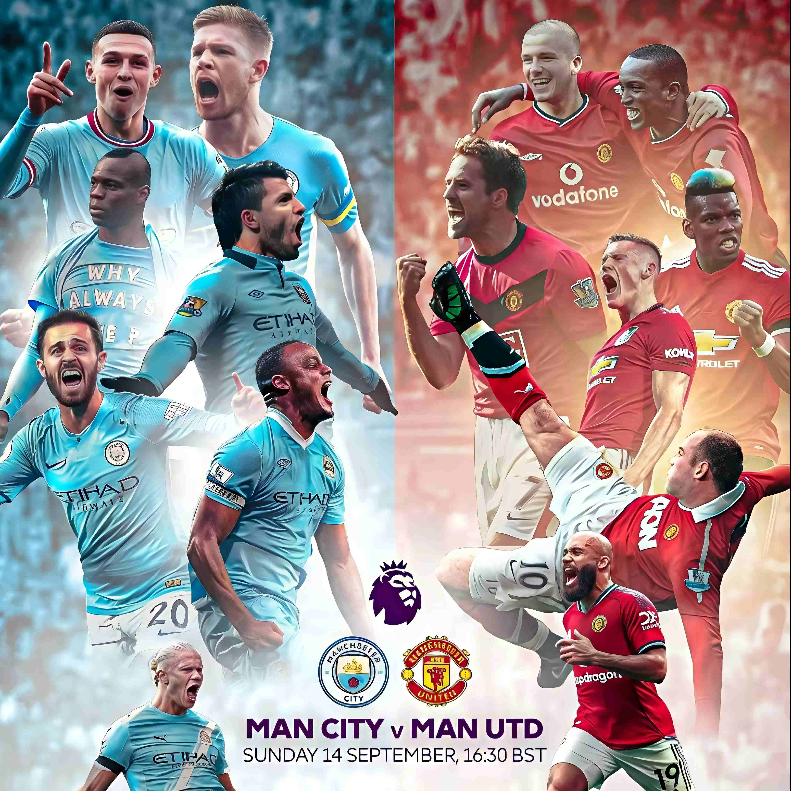
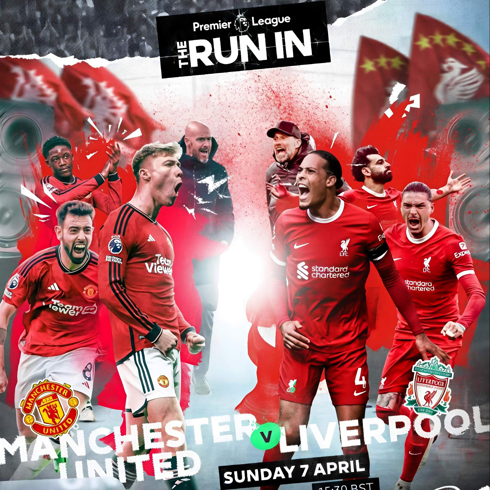

通过可视化带你认识“英超”
英格兰足球超级联赛（Premier League），通常简称“英超”，是英格兰足球总会属下的最高等级职业足球联赛。
作为世界上最受欢迎的体育联赛之一，英超以其快节奏的比赛风格、激烈的竞争环境和顶级的球星阵容闻名于世。
这里汇聚了曼联、利物浦、阿森纳、切尔西、曼城等豪门俱乐部，每个赛季都上演着扣人心弦的冠军争夺战。
我们的可视化首先实现了“英超地图”，通过地图展示各俱乐部的分布以及基本情况
随后我们通过多种方法可视化了英超联赛数据，直观展示了各俱乐部特点和联赛发展
英超地图
从数据深入分析“英超”
雷达图
2021-2022赛季 · 20支球队完整数据对比
曼城 - 2021-2022赛季表现雷达图
数据明细表
指标说明：
1.
场均进球
：总进球÷38场（单位：球）
2.
场均射正
：总射正次数÷38场（单位：次）
3.
场均角球
：总角球数÷38场（单位：次）
4.
防守得分
：10-场均失球（单位：分，失球越少分数越高）
5.
零封率
：零封场次占比（单位：%）
6.
胜率
：获胜场次占比（单位：%）
选择俱乐部
可视化模式
单队视图
两队对比
对比球队
比赛结果
比赛结果分布（主胜/平局/客胜）
交互：鼠标悬停查看具体数量与比例
控制台
排序方式
切换排序方式
当前：按进球数降序排列
图表说明
•
饼图
：显示所有比赛的结果分布
•
条形图
：显示各队赛季总进球数
• 条形图支持两种排序方式
各队赛季总进球数统计
历史排名
英超六大豪门 2000–2022 赛季最终排名变化
德比大战


北伦敦德比

曼市德比

双红会